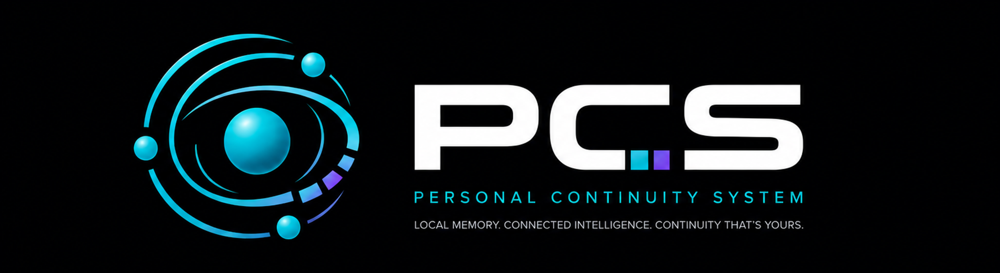

Useful context persists without surrendering ownership.

Personal AI companion for Windows
A companion that carries context forward—under your control.
PCS combines natural voice conversation, vision, grounded research, and encrypted local memory in a Windows companion designed for continuity across the things you care about.
Local memory. Connected intelligence. Continuity that’s yours.
Windows V1
Local encrypted memory
Bring your own Gemini API keys
Connected features are explicit, configurable, and visible.
Memory stays structured, reviewable, and locally encrypted.
Built around continuity
One companion. Useful continuity across what matters.
PCS brings conversation, research, visual context, and durable memory into one owner-controlled Windows companion.
01
Natural conversation
Speak naturally through Gemini Live. PCS is a general-purpose companion for everyday conversation, projects, learning, entertainment, and personal continuity—not only gaming.
02
General Memory
An encrypted local memory vault carries useful context across sessions with provenance, revision history, contradiction handling, and owner-controlled editing—not an unstructured transcript of everything you say.
03
Owner-controlled memory
Review, revise, or remove memories through the local manager. PCS rejects suspected passwords, API keys, recovery phrases, and similar credentials because it is not a password manager.
04
Voice and vision
Choose the Gemini model and companion voice. Configure visual resolution, JPEG quality, and frame interval. Vision is built in; OBS or another compatible WebSocket program is optional and not bundled.
05
Grounded research
Request source-grounded research when you need it. A separate API project can keep ordinary conversation operationally distinct from potentially billable search activity.
06
Subject Profiles
On explicit request, PCS can build encrypted, source-backed reference profiles for public subjects—preserving useful background knowledge without replacing personal General Memory.
General Memory
Your memory at the center.
General Memory stores eligible continuity information, not an indiscriminate transcript. Provenance, revision history, contradiction handling, and owner editing keep long-term context useful and accountable.
Useful continuity is selected instead of saving every exchange.
Provenance and revision history preserve where memories came from and how they changed.
Review, revise, or remove memories locally.
PCS rejects suspected credentials because it is not a password manager.
Encrypted local vault
GENERAL MEMORYContext
Provenance
Revisions
A visible boundary
How continuity moves through PCS.
Connections happen through controls you configure. Durable memory returns to a vault on your computer.
You
Speak, type, or enable visual context.
Local PCS controls
Your chosen permissions and settings.
Connected provider
Only authorized content is sent.
General Memory
Eligible continuity returns to the local vault.
Privacy & control
Local memory. Explicit connections.
PCS separates its durable local memory from the content needed to use connected conversation, vision, and research.
Stays local
- General Memory vault
- Memory revisions and provenance
- Subject Profiles
- Local settings and owner controls
- Local control-panel activity view
May leave when authorized
- Microphone audio sent to the conversation provider
- Visual frames enabled by you
- Chat or tool requests
- Grounded-search queries
Control overview
Configure the companion around you.
This interface illustration summarizes configurable options; it is not a screenshot of the current product.
Conversation
Primary model
User selected
Companion voice
User selected
Conversational name
Your preferred alias
Microphone
Permission controlled
Research
Search model
User selected
Search-project key
Optional second key
Timeout
Configurable
Waiting sound
Optional + subtle
Vision
Resolution
Configurable
JPEG quality
Configurable
Frame interval
Configurable
WebSocket
Optional host + port
Visual capture
Permission controlled
Memory
Admission
Owner rules
Review
Revise or remove
Unlock mode
Windows-account / passphrase-only
Activity
Local control panel
Companion name: your preferred alias
The product remains “(PCS) Personal Continuity System.”
Windows installation
From ZIP to first conversation.
PCS creates its own private Python environment and installs the tested dependencies without bundling a modified runtime.
Extract PCS
Download the ZIP, verify its checksum, and extract it to a normal folder before running anything.
Run the installer
The installer uses or guides you to an ordinary official Windows Python installation, creates a private PCS virtual environment, and installs the tested dependencies.
Choose your controls
Configure API keys, privacy choices, voice, models, memory, and optional vision integration.
Start from the control panel
Launch PCS locally, review its activity, and adjust the companion around how you actually use it.
PCS does not include Python, OBS, Gemini, or any other external application. OBS is optional.
Help
Why can PCS use two API keys?
The primary key normally supports live conversation. A separate search-project key can be used for grounded research, which may have different limits or billing. When both are configured, grounded research uses the separate search key by default.
You may also place a paid-project key in the primary slot if you prefer the service terms and limits associated with that account, while understanding that this can increase billable usage.
PRIMARY KEY
Live conversation
SEARCH KEY
Grounded research
Help & FAQ
Questions worth answering before you install.
PCS is designed to make its boundaries understandable—not hide them behind vague privacy language.
What is PCS?
PCS is a Windows-first personal AI companion designed to carry useful context across conversations while keeping its durable General Memory encrypted, local, and under your control.
What stays on my computer?
The General Memory vault, memory revisions and provenance, Subject Profiles, local settings and owner controls, and the local control-panel activity view stay on your computer.
Is PCS completely offline?
No. Local memory does not mean every feature is offline. Connected conversation, vision, and research send content you authorize to the selected provider.
Why are there two API-key fields?
The primary key normally supports live conversation. A separate search-project key can support grounded research, which may have different limits or billing. When both are configured, grounded research uses the separate search key by default.
Can I use a paid API key for ordinary conversation?
Yes. You may place a paid-project key in the primary slot if you prefer the service terms and limits associated with that account, while understanding that this can increase billable usage.
Is OBS required?
No. Vision support is built into PCS. OBS or another compatible WebSocket program is an optional integration and is not bundled with PCS.
Can I rename my companion?
You can give the companion a preferred conversational name or alias. The product itself remains (PCS) Personal Continuity System.
How does General Memory work?
Eligible continuity information can be admitted to an encrypted local vault with provenance, revision history, and contradiction handling. It carries useful context forward without treating every conversation as a permanent transcript.
Can I edit or remove a memory?
Yes. The local General Memory manager lets you review, revise, or remove stored memories under your control.
Will PCS store passwords or API keys in memory?
PCS rejects suspected passwords, API keys, recovery phrases, and similar credentials from General Memory. It is not a password manager.
What are Subject Profiles?
They are encrypted, source-backed reference profiles for public subjects that PCS builds only on explicit request. Native logical backup and restore for Subject Profiles is not yet available in V1.
Can PCS see my entire screen automatically?
No. Visual frames are sent only when visual capture is enabled. What PCS can see depends on the visual source you configure and the permissions you grant.
What should I do before opening the memory manager?
Stop PCS before unlocking the memory manager. The companion and manager cannot own the encrypted vault at the same time. Lock the manager before starting PCS again.
What version of Windows and Python does PCS use?
The current release is packaged for 64-bit Windows. A specific supported Windows and Python version has not been published in this draft; confirm those requirements in the release documentation before installation. PCS does not bundle a modified Python runtime.
Where can I find installation help?
The documentation link will appear in the Download section when it is published. Until then, the release should be treated as not yet available for download.
Windows release
Download PCS for Windows.
PCS 1.3.1 for Windows 64-bit. The release link is being prepared.
- Verify the ZIP checksum after downloading.
- Extract the ZIP before running the installer.
- Do not run the installer from inside the ZIP.
- OBS is optional and not included.
- API keys are supplied by the user.
PERSONAL CONTINUITY SYSTEM
PCS for Windows
- Current version
- 1.3.1
- Platform
- Windows 64-bit
- Download URL
- [DOWNLOAD_URL]
- ZIP SHA-256
- [ZIP_SHA256]
- Release notes
- [RELEASE_NOTES_URL]
- Documentation
- [DOCUMENTATION_URL]
PCS does not include Python, OBS, Gemini, or any other external application.